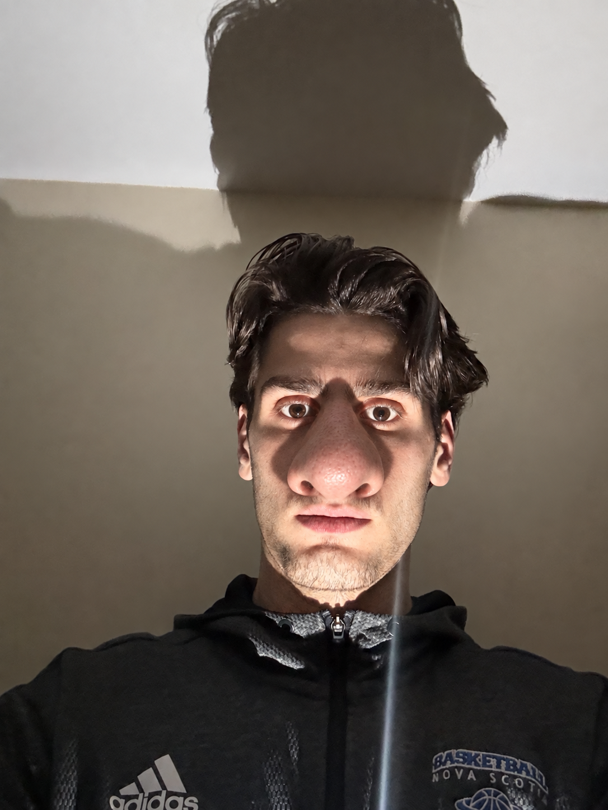

The night shift begins.
Four familiar faces.A very unfamiliar night.
Preparing the portrait…
Preparing the night shift…
END OF SHIFT
YOUR NEXT SHIFT
Check the cameras. They show where the Yams actually are.
Check the lights. Close the correct door when a nose is waiting outside.
Save your power. Leave the doors open when the way is clear.
12 AM – 6 AM · About four minutes · Sudden sounds
ON YOUR OWN TIME
Time, power, and every Yam are paused.
Q / E — left / right doorA / D — left / right lightSpace — camera monitor1–7 — camera selection← / → — look around
EMPLOYEE ORIENTATION
Survive from 12 AM until 6 AM. Cameras, lights, and closed doors all use power. At zero, your defenses fail.
Controls: Q/E doors · A/D lights · Space cameras · 1–7 feeds · Arrow keys look · Esc pause. Buttons work with mouse or touch. Leaving the tab automatically pauses.
Four faces after midnight
A silhouette that reaches first.
Hard to miss. Harder to forget.
Closer than he looks.
The light doesn't help.
THE SAME FACE. SOMETHING DIFFERENT EVERY TIME.
Enable JavaScript to play the intro. The four PNG portraits are in the assets folder.